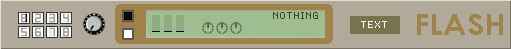

eleKtroniKa
help file
flash player module (player)
play flash movies (SWF files)

input/output
1 audio in
1 video out
properties
select 1 of the 8 flash movies
zoom dial. adjust zoom
colours. send variables
to flash movie [elek_color0, elek_color1]
6 flash controls. send variables to flash movie [elek_pad0, elek_pad5]
the flash movie name is displayed in the box
text. edit the text displayed in the movie. this is sent as the variable [elek_text] to the flash movie
to load flash movies
just drag'n drop your SWF files onto the buttons marked 1 to 8
the flash movie can also receive
the peak level for the 3 bands (bass, medium or treble)
as the variables [elek_bass, elek_medium, elek_treeble]
the time from elektronika is sent as the variable
[elek_time]
in milliseconds
the beat from elektronika is sent as a variable ie the number of beats since the begining
you can retrieve the variables in flash at _level0 instance (eg. _level0.elek_bass)
you can also send
information from flash to elektronika by using the command "fscommand" in your action script
accepted commands:
fscommand("visible",
"1111111"); // make all flash controls in elektronika visible
fscommand("visible" ,"0000000"); // make all controls invisible
fscommand("visible"
,"111000"); // make the first three visible
fscommand("tooltips0",
"the tooltip"); // set the tooltips(x) of the pad(x) [x=0....5]
copyright aestesis
2004
www.aestesis.org